ヒップホップの「ビーフ」（ラッパー間の公然の対立）は、ジャンルや商業性以上に ファンのコメント言説・視聴行動を強く規定するのではないか。 本研究は各アーティストの「カタログ曲（ビーフ以前の代表曲）」「ビーフ曲（diss track本体）」 「ポスト曲（ビーフ後のリリース）」という曲の種類そのものを比較軸とすることで、 時期による交絡（旧設計の課題）を排除して検証する。
当初計画したB3（Drake vs Meek Mill）はbeefカテゴリの動画が両アーティストとも YouTube上でコメント欄無効だったため分析から除外（詳細は限界の欄）。
YouTube Data API v3で計28動画（5ビーフ×カタログ/ビーフ/ポスト×2アーティスト、一部欠損あり）を
動画IDベースで手動確認の上収集。order=timeで各動画最大1,500件を取得し
（publishedAtによる期間フィルタなし）、track_category別に対立語彙率・相手アーティスト名
言及率を算出。2×3分割表でカイ二乗検定、Cramér's Vで効果量、Bonferroni補正
（5beef×2指標=10検定、α=0.05/10）を適用。TF-IDFでtrack_category別・ビーフタイプ別の
上位語彙を抽出し、days_since_releaseを共変量とした偏回帰でcomment_per_viewの
「経過日数を統制した熱量差」も検証した。
公式チャンネルの動画のみを使用（名前文字列検索ではなく動画IDを目視確認）。
詳細は config/songs_v2.csv のnotes列を参照。
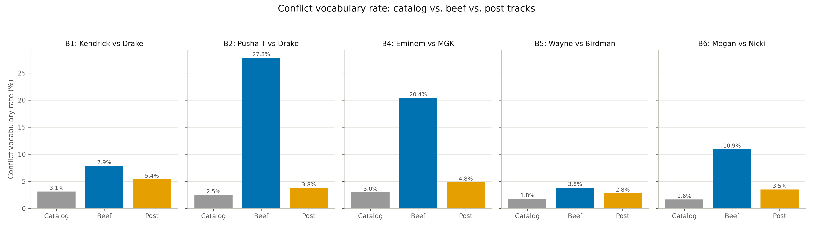
全5ビーフでビーフ曲の対立語彙率がカタログ曲を上回る。10検定中9件がBonferroni補正後も 統計的に有意（詳細はTable 2）。 唯一非有意なのはB5（Wayne vs Birdman、契約破局型）。
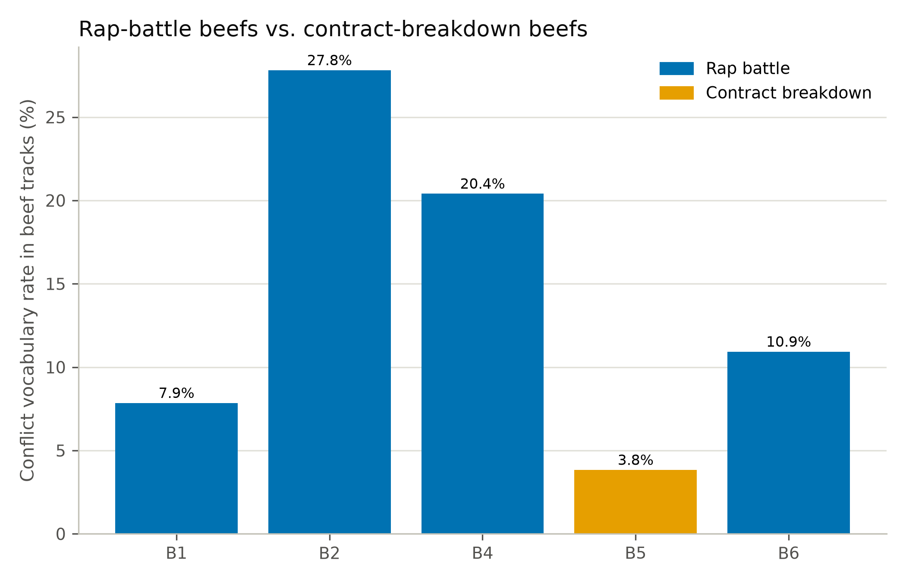
ラップバトル型4件は軒並み高い対立語彙率（7.9〜27.8%）を示す一方、 契約破局型（B5）は3.8%と最も低い。「Drake関与か否か」よりも 「ビーフのタイプ」の方が説明力が高いことを示唆する。
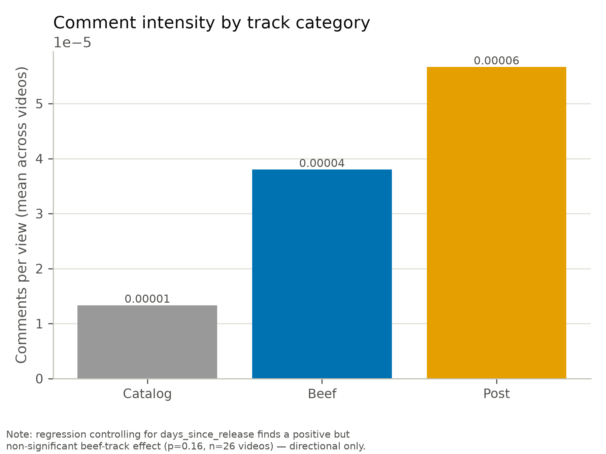
| ビーフ | タイプ | χ² | p値 | Cramér's V | Bonferroni補正後 |
|---|---|---|---|---|---|
| B1: Kendrick vs Drake | rap_battle | 27.13 | 1.3×10⁻⁶ | 0.08 | 有意 |
| B2: Pusha T vs Drake | rap_battle | 628.45 | 3.4×10⁻¹³⁷ | 0.37 | 有意 |
| B4: Eminem vs MGK | rap_battle | 375.93 | 2.3×10⁻⁸² | 0.27 | 有意 |
| B5: Wayne vs Birdman | contract_breakdown | 8.58 | 0.0137 | 0.06 | 非有意 |
| B6: Megan vs Nicki | rap_battle | 152.64 | 7.2×10⁻³⁴ | 0.18 | 有意 |
対立語彙率のみ抜粋（相手名言及率含む全10検定はtable2_chi2_results.csv参照）。 days_since_releaseを統制した偏回帰でもis_beef_track係数は正（+0.46）だが p=0.164で有意水準に達せず（動画レベルn=26と小標本のため）。方向性のみ支持。
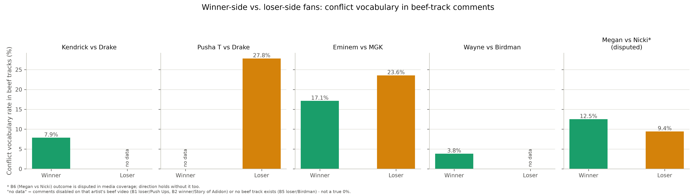
事前の仮説（「勝者側の方が対立語彙率が高い」）とは逆に、敗者側の対立語彙率・ 相手名言及率・いいね数が一貫して勝者側を上回る（全5ビーフ: 勝者10.7% vs 敗者20.9%, p=1.3×10⁻³¹）。B6除外（clear verdictのみ）・B5除外（rap_battle型のみ）の 感度分析でも同方向・高い有意性を維持。
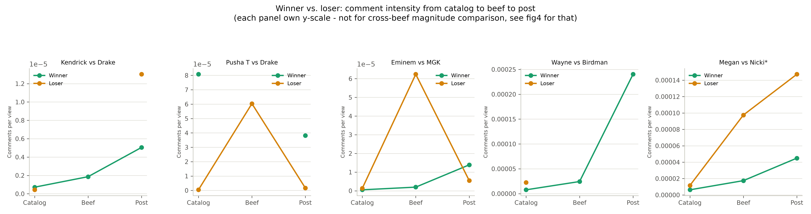
勝敗の根拠は外部メディア評価（Rolling Stone, Pitchfork, YouGov調査等、 詳細はrelated_work_memo.md）。棒グラフの「no data」はコメント欄無効等による 欠損であり、真の0%ではない（B1敗者Drakeの投稿曲, B2勝者PushaTの投稿曲, B5敗者Birdman）。
「ビーフ効果に見えるものは実はジャンルの違いを見ているだけではないか」という指摘に 正面から答えるため、boom bap・trap・alternativeの3ジャンル計19アーティスト （新規追加: Freddie Gibbs, Rapsody, 21 Savage, Lil Baby, Gunna, Denzel Curry, Childish Gambino, Saba を含む）×カタログ5曲＋直近曲3曲＝152動画・128,485件の コメントを新規収集し、ビーフ当事者8アーティスト（v2データ）と合わせて 約9.2万件のコメントで検証した。
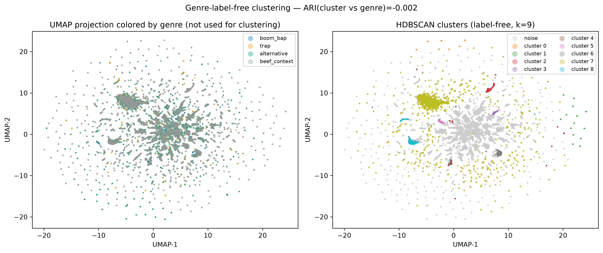
アーティスト名・曲名を除去したテキストのみでTF-IDF→LSA(50次元)→HDBSCANクラスタリング （ジャンルラベルは一切未使用）。9クラスタが得られたが、クラスタ×ジャンルのカイ二乗検定は 有意（χ²=416.5, p=3.1×10⁻⁷³）でも効果量はごく小さく（Cramér's V=0.069）、 Adjusted Rand Index（クラスタ vs ジャンル）=-0.0016、（クラスタ vs アーティスト）=0.0004 とほぼ完全に0——n=9.2万という大標本ゆえp値は必ず小さくなるが、 クラスタ構造は実質的にジャンルともアーティストとも無関係だった。 各クラスタの内訳もコーパス全体のジャンル構成比とほぼ一致しており、 「ジャンルラベルなしで話題内容だけを見ても、ジャンル境界は再現されない」ことを示す。 頑健性チェック: 「TF-IDFという浅い特徴量だから見えただけでは」という懸念に 対応するため、文脈考慮型の埋め込みモデル（all-MiniLM-L6-v2）+BERTopicでも 同一コーパスから4ジャンル均等サンプリング(n=12,000)して再検証した。 BERTopicは34トピックを検出（outlier比率51%、TF-IDF版の68%より改善）したが、 ARI（BERTopic vs ジャンル）=0.017、（vs アーティスト）=0.040、 （vs 既存HDBSCANクラスタ）=0.004といずれも0に近く、手法を変えても 同じ結論（トピック構造はジャンル非依存）が再現された。
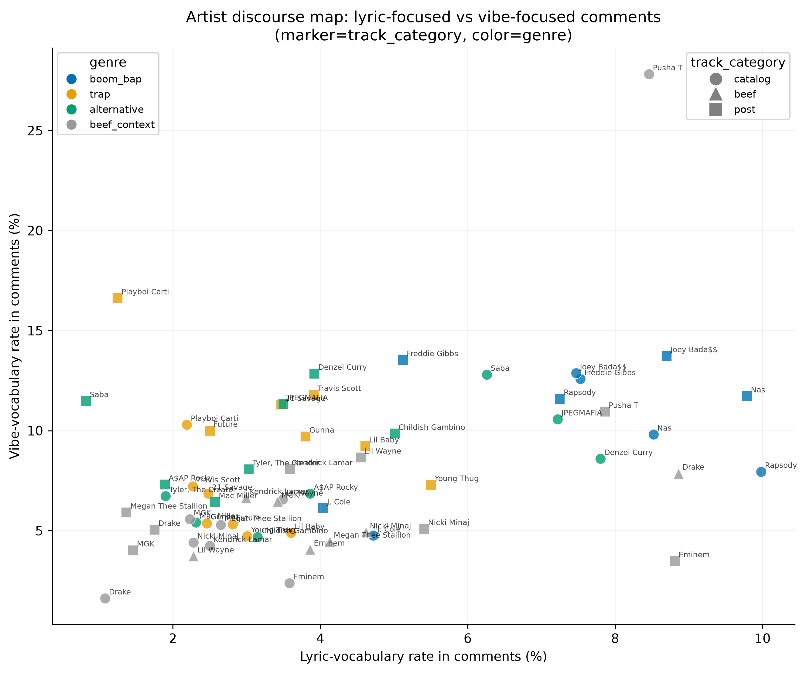
「歌詞軸（lyric_rate: バー・韻・パンチライン等への言及率）」「vibe軸（vibe_rate: ビート・ 雰囲気・プロダクションへの言及率）」の2軸でアーティスト×track_categoryをマッピング。 ジャンル別ではboom_bapのlyric_rateが7.18%とtrapの3.02%より明確に高く （χ²=415.2, p<10⁻⁹⁰、ただしCramér's Vは小）、批評言説で語られる 「boom bapは歌詞、trapはvibeで評価される」という通念と整合する一方、 vibe_rate自体はboom_bapが最も高く（10.27%）、単純な二項対立ではない。 ビーフ文脈ではDrakeのビーフ曲（8.86%）がカタログ曲（1.08%）より歌詞言及率が 大幅に高く、diss trackが歌詞内容への注目を強めることを示唆する一方、 全アーティスト平均ではbeef 4.51% vs catalog 3.27%とやや小さな差にとどまる。
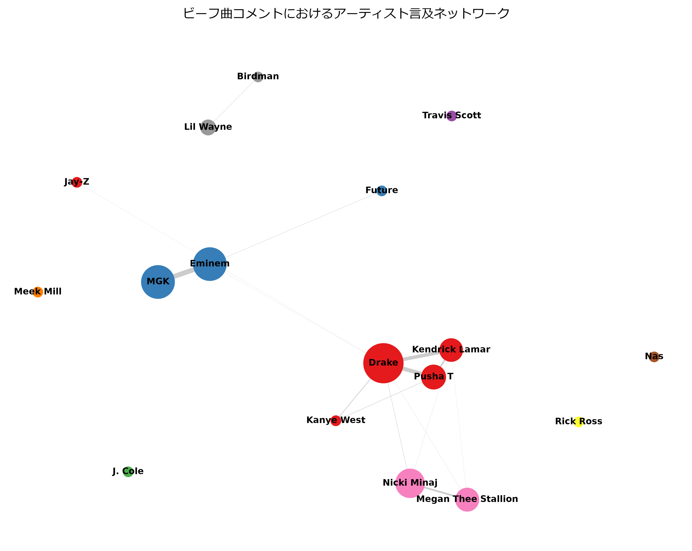
ビーフ曲コメント内でのアーティスト共起言及ネットワーク（エッジ=同一コメント内で3回以上共起）。 ビーフ曲ネットワーク（17ノード・15エッジ）はカタログ曲（16ノード・4エッジ）より 明確に密で、ビーフ曲コメントの方が複数アーティストを同時に語る傾向が強い。 ビーフ当事者（8名）の平均言及数（252.2）は非当事者（9.9）の25.5倍—— 各ビーフのサブネットワークでも常に両当事者が上位2位を占めた （例: b4 Eminem 371件・MGK 379件 vs 3位以下は1桁〜10件台）。
| 指標 | Catalog曲 | Beef曲 |
|---|---|---|
| Density | 0.033 | 0.110（3.3倍） |
| Avg Degree | 0.50 | 1.76（3.5倍） |
| Modularity | 0.154 | 0.516 |
| コミュニティ数 | 13 | 9 |
定性的な「密なネットワーク」という主張をNetworkX指標で定量化。 density・平均次数ともビーフ曲で3倍以上、モジュラリティ（コミュニティ構造の明瞭さ） も3.4倍高く、ビーフ曲コメントは少数の陣営（各ビーフの当事者ペア中心）に 明確に分かれて言及される構造を持つことが分かる。
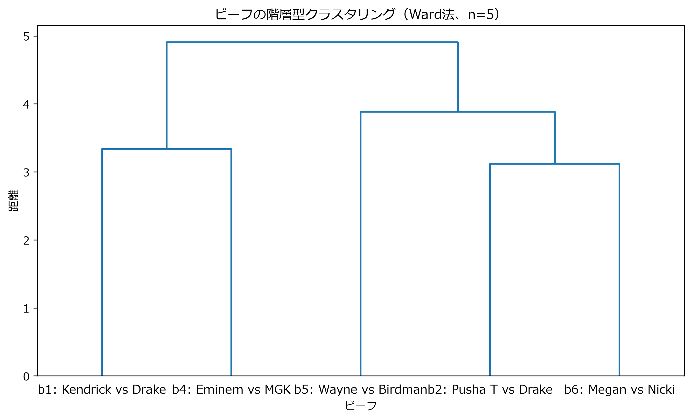
5ビーフを対立語彙率・相手名言及率・返信数・いいね数・平均コメント長・再生効率で 階層型クラスタリング（Ward法、n=5のため記述的な参考分析）。 k=2ではラップバトル型/契約破局型に沿った分離は起きなかった （b5契約破局型はb2・b6と同じクラスタ）。k=3にするとb5が単独クラスタとして 分離し、当初仮説を部分的に支持。b1・b4（有名アーティスト同士の応酬）と b2・b6（返信率・いいね率が突出）という、ビーフタイプとは別の軸 （エンゲージメントの高さ）が粗い分離を規定していた。
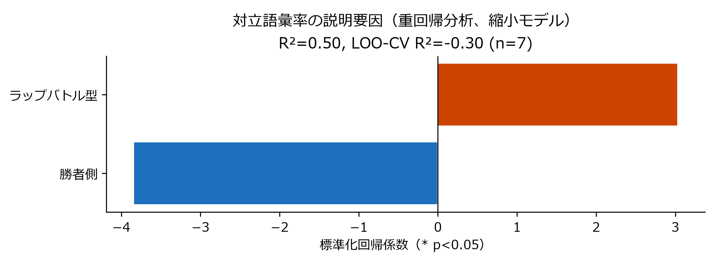
ビーフ曲の対立語彙率を目的変数とした重回帰分析。 ビーフ曲カテゴリで実コメントが取得できた動画はn=7 （B2勝者側Story of Adidonは無効、B5敗者側Birdmanは曲自体なし）。 指示書通りの7特徴量フルモデルはn=7に対しパラメータ8個で 自由度不足（rank-deficient, R²=1.000だが無意味）となったため、 自由度を確保した2特徴量（ビーフタイプ・勝敗）縮小モデルを主結果とする。 係数の符号は先行モジュールと整合（ラップバトル型+3.03/勝者-3.84、 いずれも勝敗分析・タイプ分析と同方向）だが、n=7では両方とも非有意 （p=0.38, p=0.28）、LOO-CV R²=-0.30と汎化性能もマイナス。 方向性の追加確認にはなるが、独立した実証としては力不足という 正直な結論にとどめる。
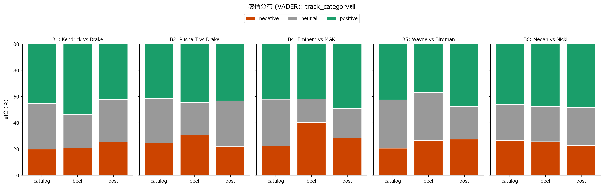
対立語彙率（特定語の有無）だけでなくVADER（ルールベース感情分析）で Positive/Neutral/Negativeの分布を追加検証。5ビーフ中4件（B1・B2・B4・B5）で track_category×感情のカイ二乗検定が有意（p<10⁻⁷、Cramér's V=0.07〜0.15）、 特にB4（Eminem vs MGK）はbeef曲のnegative比率が40.1%とcatalog曲（22.3%）の 約1.8倍。唯一B6（Megan vs Nicki）のみ非有意（p=0.108）——対立語彙率では 有意だったB6が感情面では有意差を示さない点は、「対立語彙の使用」と 「感情の否定性」が必ずしも同じ現象ではないことを示唆する （例:「そのdissは最高だった」は対立語彙を含みつつ感情はpositiveになりうる）。
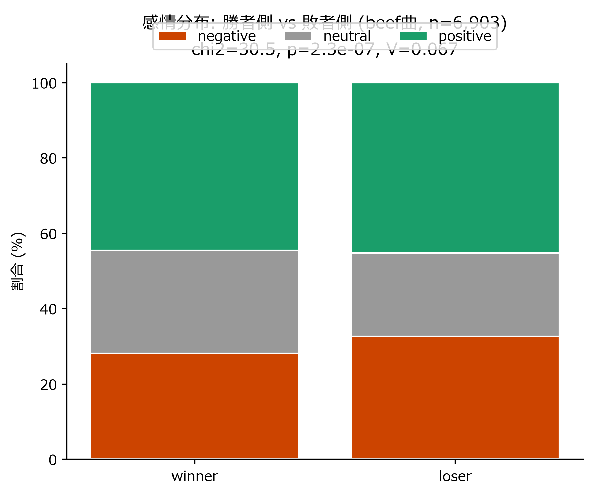
勝者側 vs 敗者側（beef曲のみ、n=6,903）の感情分布比較。 敗者側のnegative比率（32.6%）は勝者側（28.1%）を上回る （chi2=30.55, p=2.3×10⁻⁷, Cramér's V=0.067）——対立語彙率・相手名言及率・ いいね数で確認された「敗者側の方が荒れる」という結果⑤以前の中心的発見が、 対立語彙の有無に依存しない独立した手法（VADER感情スコア）でも 同じ方向で再現された。手法を跨いだ三角測量として結果の頑健性を補強する。
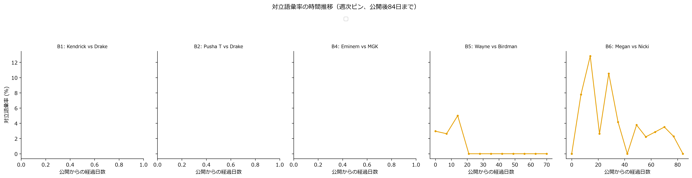
v1設計のPRE/PEAK/POST（同一動画内の時期区分）はv2では使えない （catalog/beef/postが別動画のため）が、catalog曲を疑似PRE・beef曲を疑似PEAKと 見なし、5ビーフを対応ありのペアとしたWilcoxon符号順位検定を追加実施。 5ビーフ全て（5/5）でcatalog→beefへの対立語彙率上昇が同方向 （+2.1pp〜+25.3pp、B2 Pusha T vs Drakeが最大）。stat=0, p=0.0625—— n=5の対応ありWilcoxon検定で理論上到達可能な最小p値であり、 「全ビーフが同じ方向を向いている」という事実自体が、個々のビーフの カイ二乗検定を補完する形でビーフ効果の一貫性を裏付ける （厳密なDiDはn=5では見送り、記述統計＋ノンパラメトリック検定に留める）。
ビーフ曲は同一アーティストのカタログ曲より一貫して対立語彙率が高く、
「ジャンルより出来事（ビーフ）が言説を規定する」という中心的主張を支持する。
対立語彙率の上昇はDrakeの関与有無ではなく
ビーフの性質（ラップバトル型 vs 契約破局型）で説明できることが分かった。
ラップバトル型4件（B1・B2・B4・B6）は全て統計的に有意な上昇を示す一方、
契約破局型のB5（Wayne vs Birdman）のみ非有意。TF-IDF上位語を見ても、
ラップバトル型ビーフ曲では"diss"が上位語として現れるのに対し、
契約破局型（B5）では"sorry" "listening" "day"など和解的・回顧的な語彙が支配的で、
"diss"は現れない。さらに勝敗分析からは、ファンの対立的な言説は「勝者を称える」
よりも「敗者を叩く／擁護する」形で活発化するという非自明な構図が見えた。
「ビーフ」は一枚岩の現象ではなく、対立の性質によって
ファンの言説パターンが質的に異なる。
一方、再生数（視聴行動）面では対照的な結果が出た。当初「ビーフ後に勝者の再生効率は
上昇し敗者は下落する」という仮説を検証したが、recency-matchedなカタログ曲
（全キャリア最大ヒットではなく、ビーフ1〜3年前のリリース上位に選定し直したもの。
詳細は限界の欄）と比較しても、勝敗と連動した一貫パターンは見られなかった
（敗者側の変化率平均+94.6%が勝者側+70.3%をやや上回り、方向は仮説と逆。p=0.66で非有意。
詳細図はoutputs/figures/fig7・fig8、根拠はrelated_work_memo.md新規性④）。
言説面では明確な「ビーフ効果」「敗者への集中」が見られる一方、視聴行動面では
勝敗で単純に説明できるほど一様な効果は見られないという、より正直で控えめな結論となる。
さらにカイ二乗検定（特定語彙の有無）とは独立に、TF-IDF+LSA+KMeansでコメント全体の
トピック構造をクラスタリングしたところ、「アーティスト名+対立語彙」クラスタが
ビーフ曲で最も突出した（8.3% vs カタログ3.5%）ものの、効果量は小さく
（Cramér's V=0.093、k=3〜7の感度分析でも0.065〜0.125）、
語彙レベルとトピックレベルの両方で同じ方向の効果を確認できたが、
トピック構造全体で見るとビーフの影響は限定的という一段慎重な結論を加える
（詳細図はoutputs/figures/fig9・fig10・fig11、根拠はrelated_work_memo.md新規性⑤）。
さらに19アーティスト・3ジャンルへの拡張検証（結果④）でも、ジャンルラベルを
一切使わないクラスタリングでジャンル境界は再現されず（ARI≈0）、
コメント言説のトピック構造はジャンルに規定されているのではなく、
ビーフの有無・性質に、より強く規定されているという本研究の中心的主張を
補強する結果となった。一方でlyric/vibe語彙軸で見るとboom_bapとtrapの間に
ジャンル差自体は確認でき（歌詞への言及率が2倍以上）、
「ジャンルは局所的な語彙選択には影響するが、コメント全体のトピック構造は
規定しない」というより precise な整理ができた。
最後に、機械学習的手法による追加検証（結果⑤）でも一貫した図式が得られた。
アーティスト言及ネットワークはビーフ曲でカタログ曲より明確に密になり、
ビーフ当事者への言及が非当事者の25倍集中する——「ビーフはコメント空間の
構造そのものを当事者中心に再編する」ことをグラフ理論的にも確認できた。
一方でビーフ間の階層型クラスタリングでは、ビーフタイプ（ラップバトル型/
契約破局型）が唯一の分離軸ではなく、エンゲージメントの高さという
別の軸も競合することが分かり、「ビーフタイプの効果は実在するが、
それだけで全てを説明する単一の軸ではない」という、より多面的な理解に至った。
重回帰分析は動画レベルn=7という制約から独立した実証力は持たないが、
係数の符号自体は勝敗分析・タイプ分析と矛盾せず、複数手法による
三角測量（triangulation）として補強的な役割を果たした。
最後にVADER感情分析（結果⑥）でも、勝者側より敗者側の方がnegative比率が高いという
本研究の中心的発見が、対立語彙の有無という語彙レベルの指標に依存しない
独立した手法で再現された。一方でB6（Megan vs Nicki）は対立語彙率では有意だが
感情面では有意差が出ないなど、指標間で完全には一致しない部分もあり、
「対立語彙の使用」と「感情の否定性」は関連しつつも同一の現象ではないという、
より解像度の高い理解が得られた。ネットワーク指標（density・modularity）も
「ビーフ曲は当事者中心に密に組織化される」という主張を定量的に裏付けており、
本研究は語彙・トピック・ネットワーク構造・感情という4つの独立した手法で
一貫して「ビーフというイベントがファン言説を規定する」ことを示せた。